1989
Born
Born on the 11th of october in Genk, Belgium
Born on the 11th of october in Genk, Belgium
Primary school in the Netherlands
Started playing football at BV Sturm Wissel eV
Last year primary school
Started playing football at KFC Park Houthalen
First year secondary school at Sint-Jan Berchmanscollege in Genk
Switched secondary school to Hezeland College in Gennep, The Netherlands
Major knee injury, forced to stop playing football
Start developing interest in computers and IT
Father passed away at the beginning of 2004
Re-enrolled at Sint-Jan Berchmanscollege in Genk, studying office management
Building my very first computer, IT interest is getting more and more prominent
Internship as administrative assistant at primary school De Lakerberg in Houthalen lasting 6 months
Enrolled at Regina Mundi in Genk, studying "E-Lab"
Internship as junior hardware engineer at Jodocy BVBA in Donceel lasting 6 months
Chosen to do Cisco IT Essentials at VDAB during school hours, succesfully completed the course
Enrolled at Hogeschool Zuyd in Heerlen, studying Network Infrastructure Design, HBO
Pausing studies due to personal reasons, plan is to start again soon
Moving back to Genk, Belgium and started living together
Signed a contract with Securitas NV in Belgium, training in Brussels
Stationed at a chemical company in Belgium, part of security team
Interest in IT keeps growing, following different online courses throughout the years
Married in september 2019 after being together for 11 years
 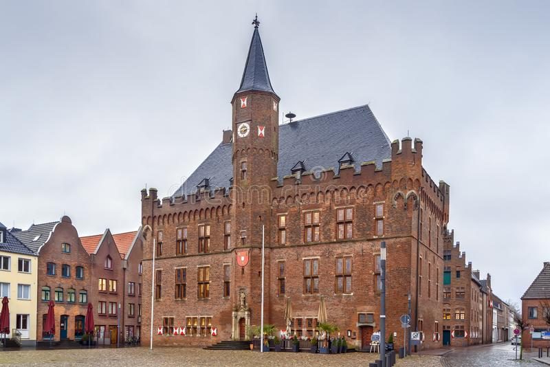
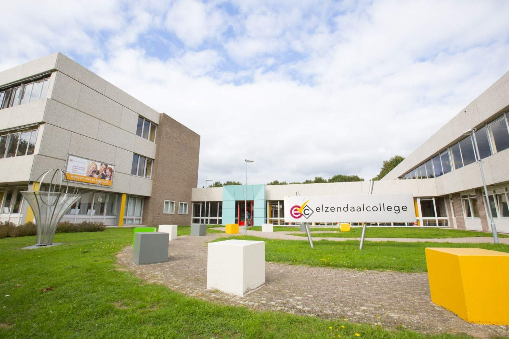
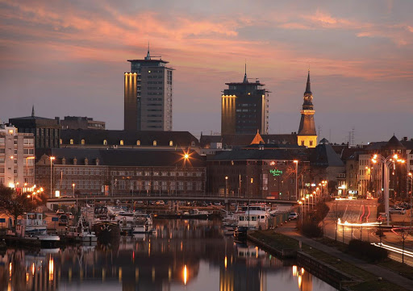
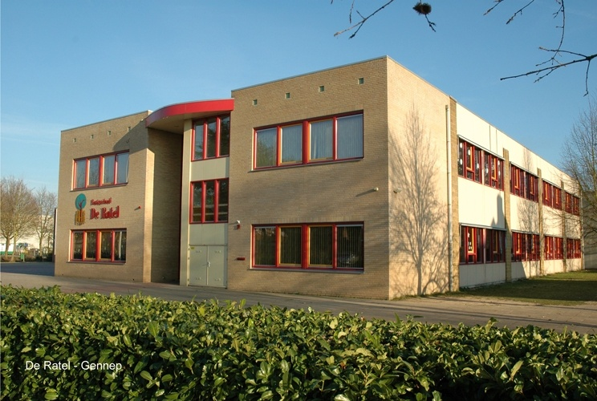
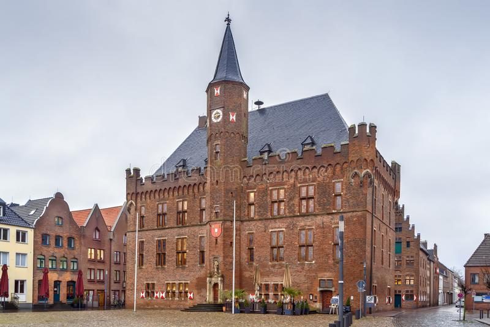
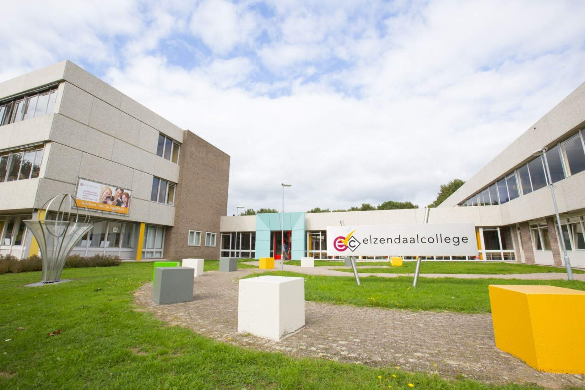
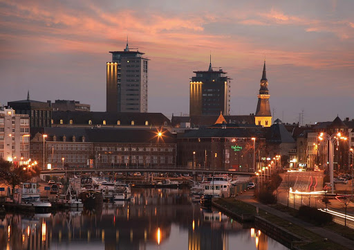
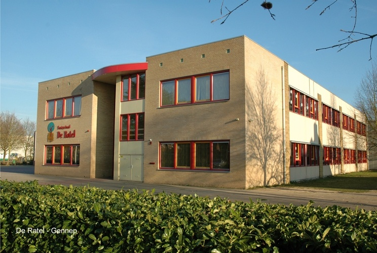


Dutch
English
German
French
Windows
Microsoft Office
phpBB
Wordpress
HTML
CSS
php
SQL
Javascript
jQuery
Preparing, maintaining and classifying documents. Handling of in- and outgoing calls, faxes, e-mails as well as writing shift reports and verifying different registers
Checking, providing and signing (ADR) papers, processing info in a WMS, general help with registering at (un)manned counters, providing information about the layout and zones of the plant.
Welcoming visitors, contractors and suppliers. Identifying the needs, providing different kinds of information, notifying their contact person, issuing access badges, distributing mail and packages.
Monitoring the use of PPE, registration and handling incidents, applying first aid and arranging transport if needed, setting up an initial crisis center, distributing material related to safety campaigns.
Access control on persons and vehicles, managing access profiles per individual, alarm and incident handler, guarding premises.
Formatting different systems, reinstalling operating systems, replacing parts on different devices, troubleshoot incoming electronics, prepare devices for usage, placing AIOs for demo usage.
Writing letters, copying & plasticizing various documents, maintain databases, manage invoices.
First point of contact for parents, teachers and students & handling of in- and outgoing calls.
Website for the car community "Clio Club". Uses Wordpress as a base, custom made theme and styling, uses Wordpress addons to enhance the experience and expand the usability.
Visit websiteForum for the car community "Clio Club". Uses phpBB as a base, custom made theme and styling. A few custom and community addons to enhance the experience and expand the usability.
Visit forumWebsite for a friend who started her own business. Uses Wordpress as a base, to keep it simple for her to post her own messages and make some adjustments of her own.
Visit websiteA simple game made with HTML, CSS & Javascript. Enhanced the difficulty by adding a Hard mode.
Go to GitHub RepA todo list made with HTML, CSS & jQuery, a follow up from an older project.
Go to GitHub RepA simple Score keeper that uses HTML, CSS & Javascript to keep the score of a game.
Go to GitHub RepA rudimentary clone of Patatap using HTML, CSS, jQuery, Javascript & Paper.js.
Go to GitHub Rep 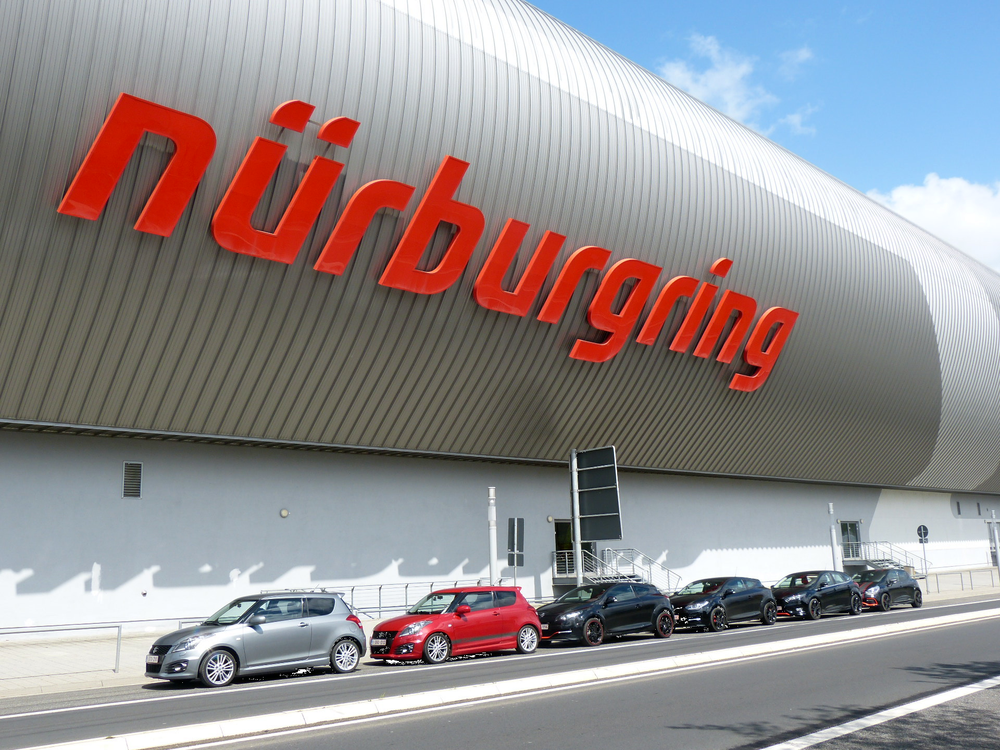
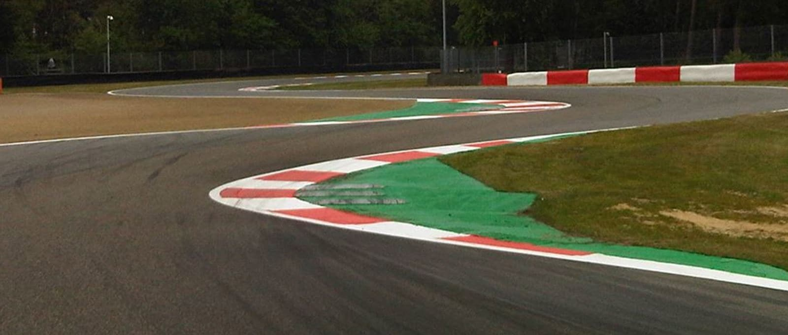
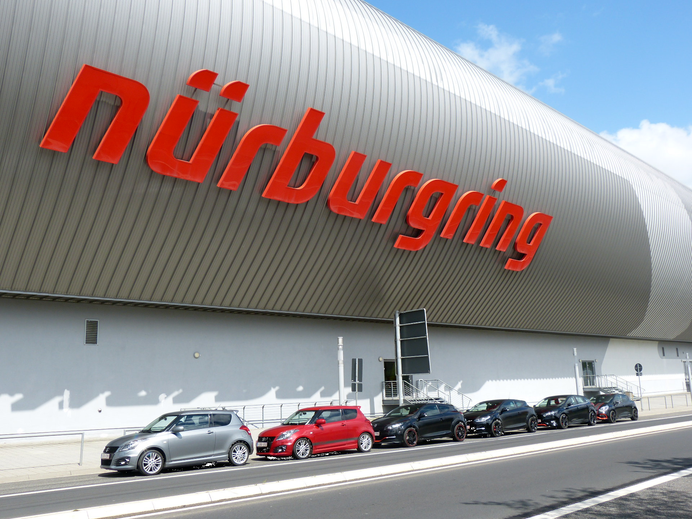
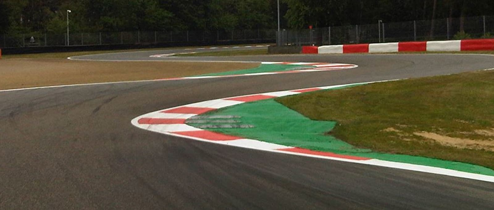
 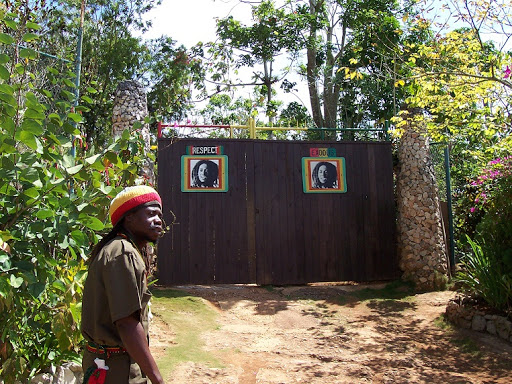
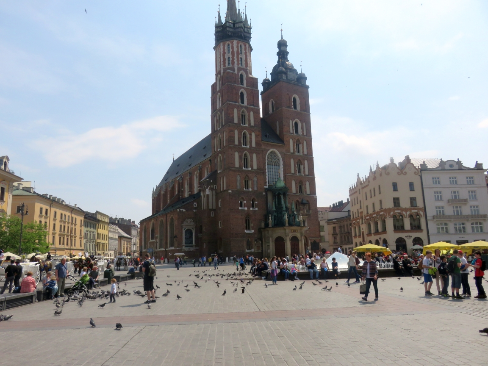
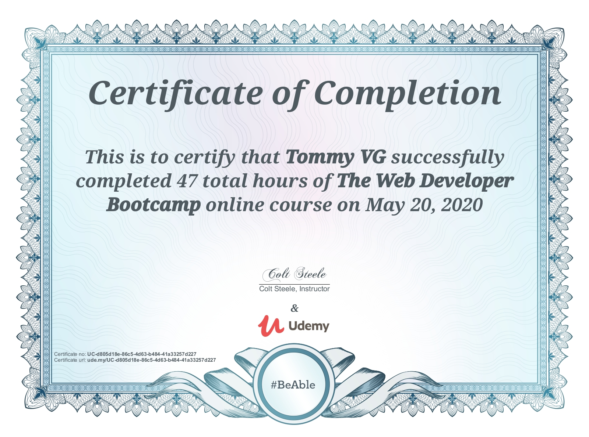
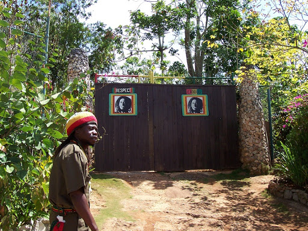
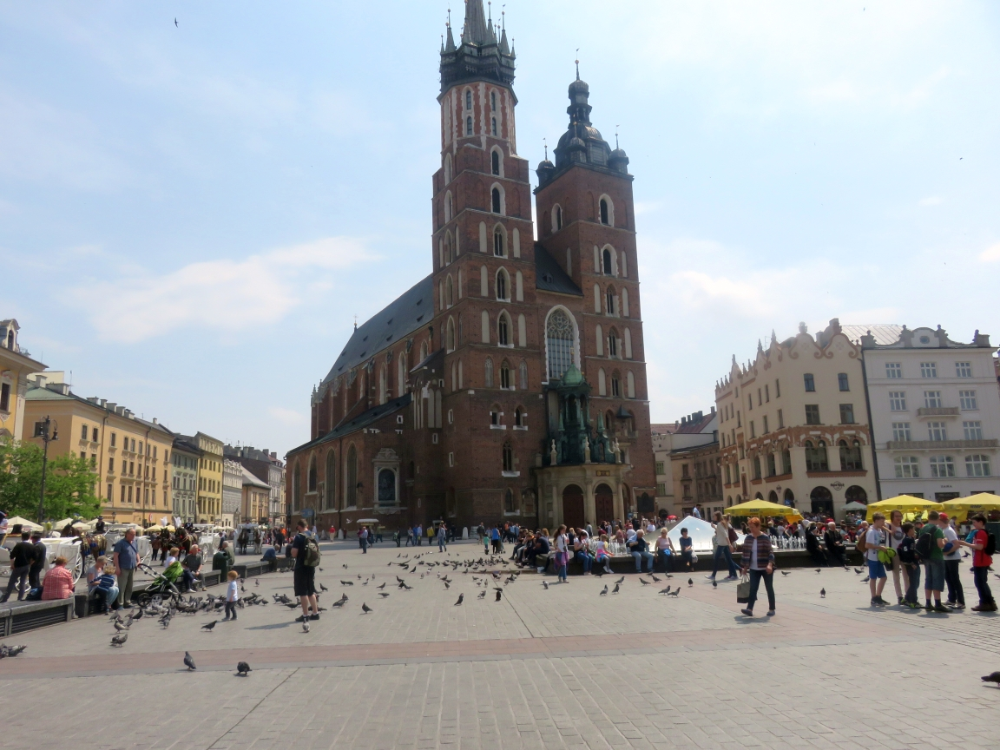
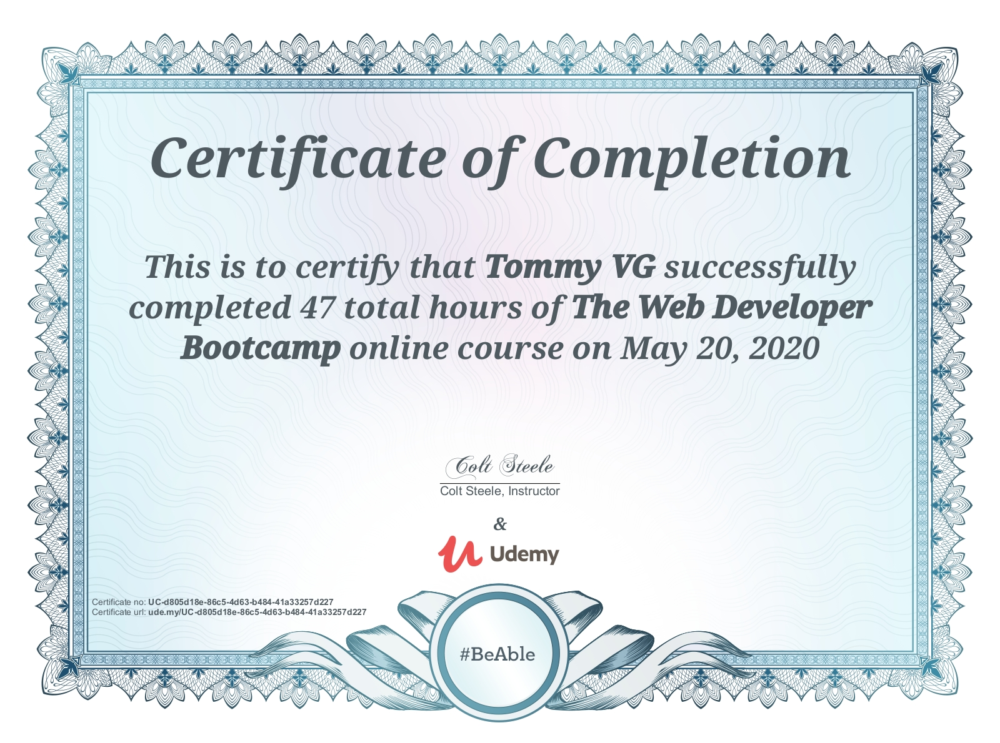

Travelling has always been in my blood, if it is by myself, with friends or my family, it is always a joy to go somewhere I've never been before and experience something I don't see every day. That big city, a famous landmark or just see the riches our planet is made of. I try to go to a different country every year, mixing the hotspots with the hidden gems, going to a well-known country and following that up with a country that still is developing its tourism branch. Every country is distinctive, develops in their own way and has their own culture, wonders and history.
I've always had a fascination for cars, but when I turned 18 and got my drivers licence it really kicked off. I've visited numerous races, driven on circuits myself even more often, attend meetings, go on long road trips or just drive off somewhere without a plan. The power and mobility a car gives you is unparalleled, just sit back and enjoy the view. Watch the scenery go by when cruising or give it your all during a track day. It gives me a sense of total freedom and is relaxing altogether.
I find nothing more relaxing than to dive onto the sofa and put on a good film or TV show. Fast paced action, a true-story drama or nail-biting thriller, as long as it takes my mind of things. Reading a book that describes the story in so much detail, wanting me to keep reading and makes me forget time. Or playing a game, if it's by myself or with friends, be it a board or computer game, as long as it's entertaining and can keep me occupied.
It's impossible to forget IT of course. Keeping up to date with the latest news, learning something new or just trying something out. The possibilities are endless, we have a near infinite amount of information available to use in our everyday lives. Upgrade my own computer, automate a process or give something back by creating something yourself. I've got a broad interest in IT, from coding, hardware to networks and security so there is always something to learn or improve in. I've also been the webmaster of a car club for quite a few years now, maintaining their website, forum and helping to manage the social media accounts together with the rest of the crew. This not only helps the club but also helps me in maintaining and upgrading my own skills.